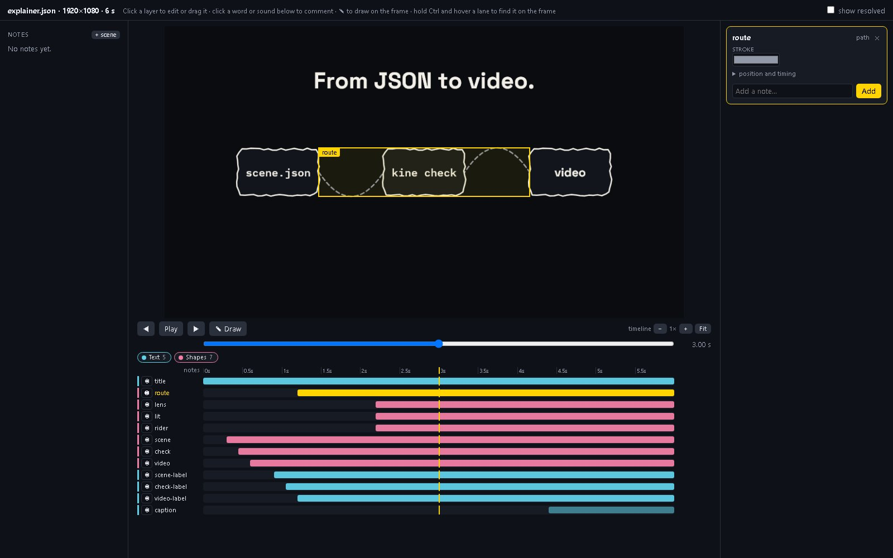

Review it on the frame.
An agent can check a scene, but a person still has to say what looks wrong. kine edit opens the scene in the browser, and what they point at comes back to the agent as notes.
kine edit scene.json
Click a layer on the frame to select it, or drag it to move it. A sidebar shows its values and a note field, and the frame outlines what the sidebar applies to. Under the clip each layer and sound has a lane, colour-coded by kind, with an eye that hides a layer in the preview only. Click a word of the voice or a caption to comment on it, play a sound on its own, or draw on the frame.
kine_feedback.
check selected. The strip under the clip is the scene's layers and sounds at the playhead; the yellow lane is the selected layer. Open the image for full size.

kine_feedback
Notes are kept in scene.feedback.json beside the scene, each with a time and, when there is one, a point, layer, sound, word or drawn strokes. A note is marked stale once the scene changes. An agent lists the open ones, replies, and resolves them over MCP; with still set it gets the frame with the point ringed and the strokes drawn on it.
{"id": "n1", "t": 1.7, "kind": "pin", "status": "open",
"text": "Too heavy next to the caption; try 140.",
"x": 0.47, "y": 0.4, "layer": "check",
"scene": "42955e2cf790", "created": 1793666638, "replies": []}The editor serves on 127.0.0.1 only and draws frames on the CPU. It changes plain numbers and text in the scene file in one save, and refuses when the file changed under it, when the scene has comments, or when the result would not load.